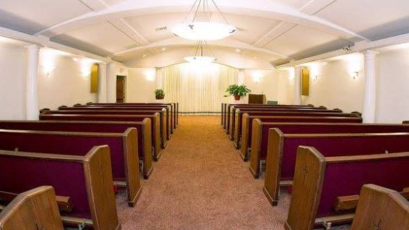

About Gentle Heart
A legacy of compassion and dignified service
Our Story
Founded with a simple mission: to provide families with compassionate, dignified, and personalized funeral services during their most challenging times.
What started as a small family-owned chapel has grown into a trusted institution, serving families across Malawi and around the world through our international repatriation services.
Throughout our history, we have remained committed to our founding principles—treating every family with the same care and respect we would want for our own loved ones.

Our Values
The principles that guide everything we do
Compassion
We approach every family with genuine empathy and understanding.
Excellence
Unwavering commitment to the highest standards of service.
Integrity
Honest, transparent guidance through every decision.
Respect
Honoring diverse traditions, beliefs, and personal wishes.
Why Choose Us
Experience & Trust
Decades of expertise in funeral care, ensuring every detail is handled with professional precision and heartfelt care.
Dedicated Team
Our licensed funeral directors and support staff are available around the clock to provide guidance and assistance.
Modern Facilities
Beautifully appointed chapels, reception halls, and preparation rooms designed for comfort and dignity.